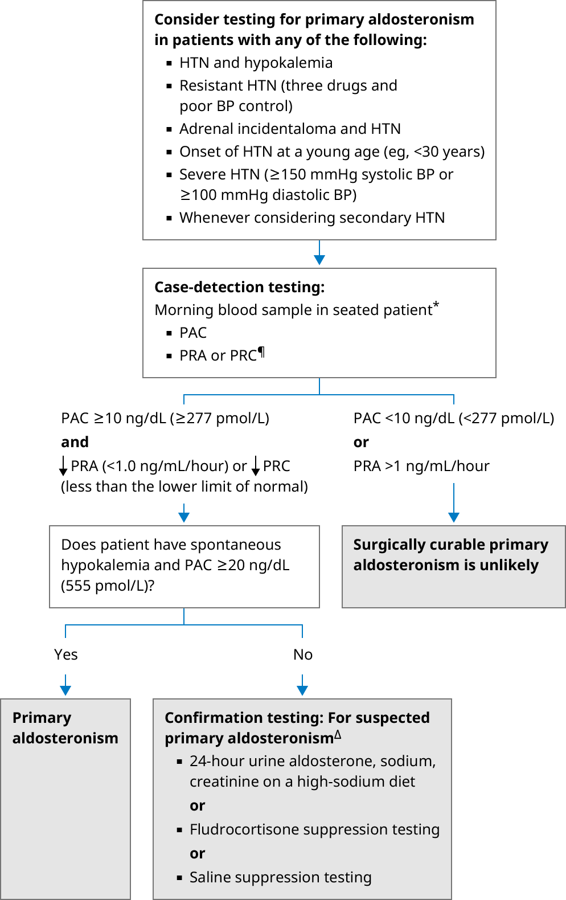

BP: blood pressure; HTN: hypertension; PAC: plasma aldosterone concentration; PRA: plasma renin activity; PRC: plasma renin concentration.
* Patient out of bed for at least two hours and seated for at least 5 to 15 minutes before sample is drawn.
¶ Direct PRC can be measured instead of PRA. However, UpToDate authors prefer PRA. Refer to UpToDate topic on diagnosis of primary aldosteronism for interpretation of PRC cutoffs and normal values.
Δ Oral sodium loading over three days is one confirmation test that many experts use. An alternative is the saline infusion test. Details of both are reviewed in the UpToDate topic on diagnosis of primary aldosteronism.